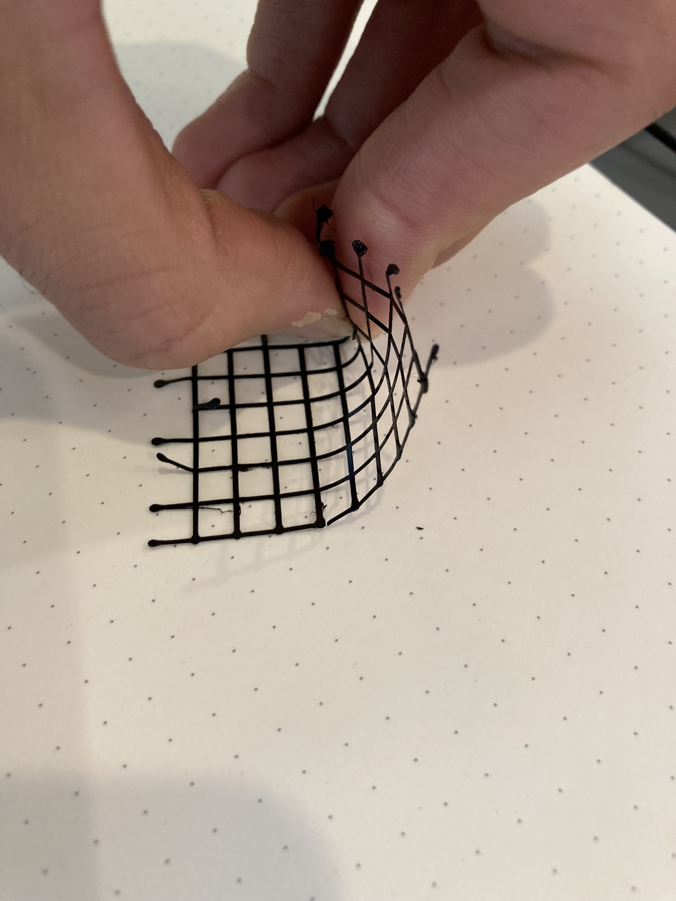
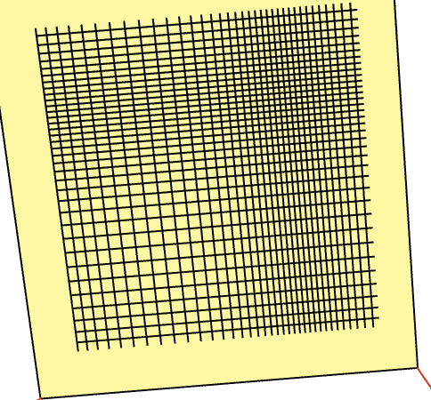

making shoes
making!
first steps
Despite saying that I wanted to be a shoe designer when I grow up in a 3rd grade school project, I have next to no idea how shoes are made. Following the hybrid fabrication workflows of DuoSkin & ExoSkin from this week's papers, I started by reading a bit about 'analog' shoe making processes. I learned the process normally starts from a model of your foot (a last), which you can draw your pattern on, then remove to transfer the pattern onto the material of your choice. In the sprit of these hybrid fabrication processes, I decided to use this cut and sew method of shoe making combined with some digital fabrication technology. For the design, I went with a pair of slippers/flats; it seemed like a simple pattern & geometry to start from. I just sketched an outline of this design on paper. By doing so, I made these shoes specific to me.
making the "fabric"
I've liked the look of Nike Flyknit shoes, where the designers use strands of yarn in different knit patterns to make some parts more sturdy, or breathable, etc. This customization based on foot data is reminiscent of the mechanical metamaterial structures for shoe soles discussed in class. I don't have the time (or data) to make anything so functional, but I want to use this as an aesthetic inspiration. To achieve a flexible, wireframe-y looking ""fabric"" to make my shoe out of, I tried 3D printing sheets of single width extrusions. I did this using my p5.fab library. Here's a little test swatch of single layer height:

Though I tried single, double, and triple layer heights, I found that a single layer height was durable enough for these purposes and decreased fabrication time. From here I made two aesthetic-driven choices: in analogy to the functional tight/loose knits in Flyknits, I varied the spacing between extrusions. This was also a somewhat strategic decision to decrease print time:


And for a bit of "colorwork", I swapped filaments to white and printed the same pattern again offset a bit. The result:

So, I was able to make sheets of my material by printing one in one filament, swapping & flushing the old color, and printing in the second. Each filament color prints in about 15 minutes, so I'm able to make a 175mmx175mm sheet of 'fabric' in just over a half hour. Unfortunately my foot is larger than the Ender print bed, so I needed two sheets per shoe upper --> 4 sheets total.
assembly
I made the (perhaps unwise) decision to take this homework assignment as an opportunity to learn how to sew. The shoe general assembly process was to:- cut the material based on my shoe pattern above; to do this, I just taped the sheets together. (I couldn't start by sewing them, otherwise I'd cut right through what I'd sewn).
- sew the two sheets together
- sew the sheets to the sole material. I had originally planned to sew directly onto an old shoe insert that I had; however, I found the material ended up being too difficult. In a Project Runway Unconventional Material Challenge Moment™, I instead used the packaging from some Protopasta filament, mostly for the silver color. This is not a great sole material choice.


The final products are wildly different sizes and borderline unwearable, but here they are on the foot! I ended up inserting the shoe inserts that I was going to sew into.

reflections
Sewing skills aside, I thought that printing over the pattern in two colors opened up some interesting possibilities for printing with the p5.fab system. Color is such an important part of the visual design process with p5.js, and I'd like to capture a bit of that. It'd be fun to get it running on a dual-extruder setup.In terms of process: printing sheets significantly sped up fabrication time relative to printing e.g. a complete shoe, but the material wasn't terribly conducive to sewing. A tighter pattern might have made it a bit easier (though that would also increase print time). I thought of the sheets as raw fabric to cut up after the fact; a better idea might be to print the final pattern directly so that we don't print excess material (e.g. the shoe hole), and would make the shape & size more easily replicable.